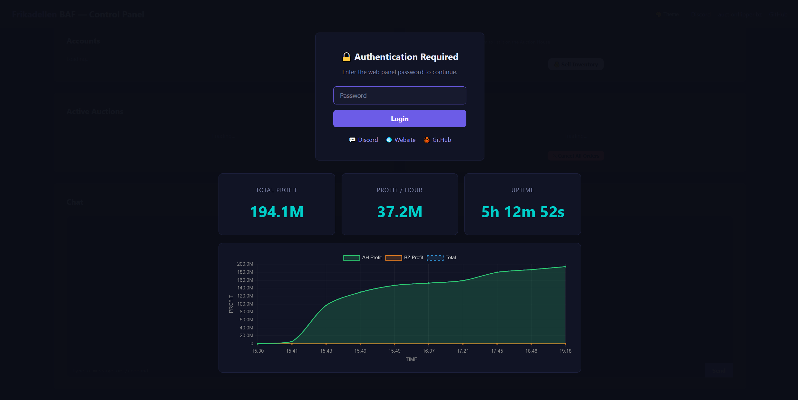

Sub-second AH sniping
Coflnet sniper data drives BIN purchases on a fast path that pre-clicks Confirm before the window even renders.
Frikadellen BAF snipes underpriced BINs in milliseconds, relists at target, runs your bazaar orders, and reports every coin — controllable from a web panel or straight from Discord.
Video not loading? Watch on YouTube ↗
A rolling, anonymized look at the kind of snipes BAF lands — item, price → target, and theoretical profit.
One binary that buys, sells, manages orders, and never sleeps.
Coflnet sniper data drives BIN purchases on a fast path that pre-clicks Confirm before the window even renders.
Bought items are relisted at the target price, sold auctions are claimed the moment Coflnet signals, profit logged live.
Places buy & sell orders, tracks fills, collects, cancels stale orders, and takes profit — entirely automatic.
Link with a one-time code, then run /list, /auctions, /pause, /profit and more — no port forwarding.
Pause/resume, toggle AH & Bazaar, list items, manage auctions and orders, switch accounts, and chat — from any browser.
Measures real latency to Hypixel and leads bed clicks by your ping so they land exactly as the grace period ends.
Comma-separate usernames and set a timer; the macro rotates accounts on schedule and transfers Coflnet licenses.
Auto-reconnect, a GUI watchdog that frees stuck windows, packet-rate limiting, and a prioritized command queue.
The web panel, the Discord integration, and the public flip feed.



Four steps, then it runs itself.
Log in with your Microsoft account. The macro joins SkyBlock and opens a WebSocket to Coflnet's flip feed.
Coflnet streams underpriced auctions and bazaar margins in real time; each opportunity is evaluated instantly.
BINs are bought on the fast path; bazaar orders are placed, tracked, and managed automatically.
Items relist at target, sold auctions are claimed, and every flip is reported to Discord with live profit.
Plain config.toml — or edit live in the web panel.
# Minecraft account(s) — comma-separated for multi-account
ingame_name = "YourUsername"
# Flip modules
enable_ah_flips = true
enable_bazaar_flips = true
# Speed tuning
command_delay_ms = 500
bed_spam_click_delay = 100
bed_pre_click_ms = 30
# Web control panel
web_gui_port = 8080
# Discord notifications
webhook_url = "https://discord.com/api/webhooks/..."One Linux VPS, three commands. The loader keeps itself updated.
$ wget https://github.com/TreXito/frikadellen-baf-121/releases/latest/download/FrikadellenBAF-loader-linux-x86_64
$ chmod +x FrikadellenBAF-loader-linux-x86_64
$ ./FrikadellenBAF-loader-linux-x86_64
The loader downloads and runs the latest version on every start. Wrap it in screen to keep it alive 24/7.
$ wget https://github.com/TreXito/frikadellen-baf-121/releases/latest/download/frikadellen_baf-linux-x86_64
$ chmod +x frikadellen_baf-linux-x86_64
$ ./frikadellen_baf-linux-x86_64
Windows & macOS builds are on the releases page.
The common questions about the Auction House & Bazaar flipping macro.
Frikadellen BAF is a Hypixel SkyBlock macro that automatically flips the Auction House and Bazaar. It uses Coflnet's flip feed to snipe underpriced BIN auctions in milliseconds, relists them at target, runs your bazaar orders, and tracks profit — controllable from a web panel or straight from Discord.
Yes — it's free and open source under the AGPLv3 license. You only need a Coflnet account for the flip data.
Both. It runs Auction House flipping (sub-second BIN buying, auto-relisting, claiming sold auctions) and Bazaar flipping (automatic buy/sell orders, fill tracking, stale-order cancellation) at once, and you can toggle each independently.
A Minecraft: Java Edition account, a Coflnet account, and somewhere to run it. A cheap Linux VPS (ideally in the US, near Hypixel's servers) is recommended for 24/7 low-latency running; Windows and macOS builds are provided too. See the setup guide.
The buy path is typically under 100 ms, with confirm pre-clicking and a 300 fps detection loop. Real speed depends mostly on your latency to Hypixel, which the built-in /hypixel ping command measures.
Yes. Link your bot with a one-time code, then use slash commands like /list, /auctions, /pause, /profit and /leaderboard — no port forwarding or public web panel required.